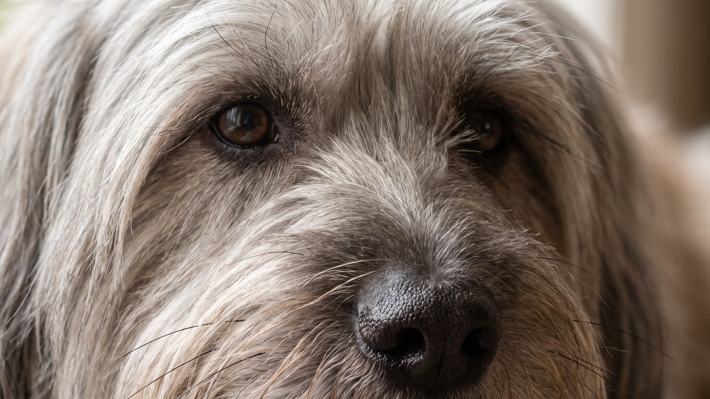

Скай-терьер выглядит как длинная собака в шёрстяном плаще — шерсть падает до земли, пробор тянется от носа до хвоста, а из-под чёлки смотрят внимательные глаза. Порода редкая: в мире ежегодно регистрируют меньше ста щенков. За этой внешностью — характер, который не прощает безразличия: скай-терьер выбирает одного человека и остаётся ему верен всю жизнь. Ниже — как устроена эта порода, что нужно знать об уходе за шерстью и какие три ошибки чаще всего делают новые владельцы.
🐾 Ваш питомец — скай-терьер?
Заведите профиль в AnimaLife: приложение запомнит породу, возраст и вес и будет подсказывать по уходу именно для неё. Вопросы AI-ветеринару — круглосуточно и бесплатно.
Завести профиль → Завести в MAX →
У вас iPhone? AnimaLife есть в App Store
Шерсть скай-терьера — двойная: мягкий густой подшёрсток и жёсткий прямой покровный волос длиной до 14 см. Пробор проходит строго по хребту от затылка до основания хвоста. Это не украшение — это стандарт породы, и от владельца требует ежедневной работы.
Скай-терьер — хондродистрофическая порода: тело длинное, конечности короткие. Это красиво, но означает повышенную нагрузку на позвоночник — особенно в щенячьем возрасте, когда хрящи ещё не окрепли.
Скай-терьер исторически работал в паре с одним охотником. Эта черта никуда не делась: порода глубоко привязывается к одному хозяину, остальных членов семьи принимает, но держит дистанцию. С незнакомыми людьми — сдержан и настороженно наблюдателен, агрессии не проявляет, но и навстречу не бежит.
Упрямство — не дефект, а рабочее качество терьера. Скай-терьер думает прежде, чем выполнить команду. Принуждение и грубость не работают — порода закрывается. Лучший результат даёт короткий тренинг (5–10 минут) с чёткими командами, паузами и поощрением.
Скай-терьер — выбор для человека, который готов к плотному ежедневному контакту, терпелив в обучении и не ждёт от собаки шумного веселья на вечеринке.
Три ошибки, которые делают чаще всего:
🐾 У вас скай-терьер?
AnimaLife соберёт уход под породу: к каким болезням есть склонность, что проверять по возрасту, чем кормить и когда пора к врачу. Бесплатно, прямо в мессенджере.
Собрать план ухода → Собрать в MAX →
У вас iPhone? AnimaLife есть в App Store
🐾 Понравился разбор?
Подпишитесь на канал — каждый день разбираем по одному тревожному симптому у кошек и собак: что в пределах нормы, а когда пора к врачу. Подпишитесь, чтобы не пропустить разбор, который может спасти здоровье вашего питомца.
Материал носит информационный характер и не заменяет очную консультацию ветеринара.